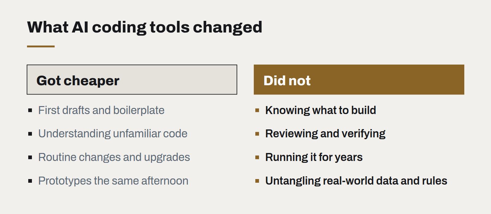

What changes when software is cheap to write
AI coding tools have made producing code dramatically faster. They have not made deciding what to build, checking that it works or running it for years any cheaper — and that shifts where the value is.

Over the past year, AI coding assistants have gone from autocomplete to something closer to a junior colleague: they draft whole functions, write tests, explain unfamiliar code and carry out routine changes across a codebase. On our own projects, the time it takes to produce a first working version of a well-specified feature has fallen substantially.
It is tempting to conclude that software has simply become cheaper. Some of it has. But the effect is uneven, and understanding where it falls changes how businesses should buy, build and staff technology work.
What got cheaper
- First drafts. Scaffolding, boilerplate, integrations against well-documented APIs, data transformations, and the hundred small utilities every system needs.
- Understanding existing code. Asking an assistant to explain an unfamiliar module or trace how a value flows through a system turns hours of reading into minutes.
- Routine change. Upgrading a dependency, renaming across a codebase, writing the tests nobody had time for.
- Prototypes. A clickable version of an idea can exist the same afternoon it is discussed.

What did not
- Knowing what to build. Understanding the business problem, the constraints and the users is exactly as hard as it was. When building is fast, building the wrong thing is merely faster.
- Verification. Generated code still has to be reviewed, tested and understood by someone accountable for it. Review has become the bottleneck on many teams, and it is skilled work.
- Operation. Every line shipped has to be hosted, monitored, secured and maintained for years. Cheaper creation does not make ownership cheaper; if anything, it makes it easier to accumulate more code than a team can look after.
- Integration with reality. Messy data, legacy systems, and the undocumented rules inside a business still take patient, human work to uncover.
What this means for businesses
Build versus buy has shifted. Small internal tools that once could not justify a custom build now often can — a tailored workflow instead of a generic SaaS subscription with a dozen workarounds. But each one is a system someone must own. Build where it creates real advantage; buy where the problem is generic.
Specification is worth more. The clearer the description of what is needed, the more effectively AI tools can help produce it. Time spent on the brief, the acceptance criteria and the test cases now pays back faster than ever.
Quality gates matter more, not less. Automated tests, type checks, code review and evaluation suites are what make a high rate of change safe. Teams that skip them will ship faster for a quarter and slower after that.
Small teams can do more. A few experienced people with good tools can now deliver what used to need a larger team — provided they spend the time saved on judgement, not on producing more code for its own sake.
The part that stays human
The value in software work is moving up the chain: from typing code toward deciding what should exist, checking that it is right, and taking responsibility for it once it is live. That is where we are putting our own effort, and where we would advise clients to put theirs.
Legacy modernisation without the big bang
The rewrite that replaces everything at once is the most reliable way to lose two years. Replacing a system one route at a time is slower to describe and much faster to finish.
Passkeys are ready. Your login page probably isn't.
Phishing-resistant sign-in now works across the devices your customers already own. The technology is done; what remains is product design and a sensible migration plan.
WebGPU and the return of the rich web
Real-time 3D, large visualisations and on-device AI now run in an ordinary browser tab. The question is no longer whether the web can do it, but whether your content deserves it.